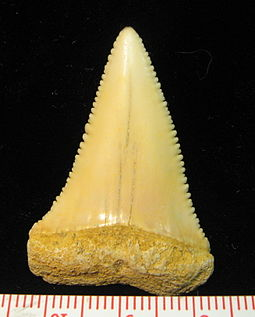

The great white shark lives in almost all coastal and offshore waters which have water temperature between 12 and 24 °C (54 and 75 °F), with greater concentrations in the United States (Northeast and California), South Africa, Japan, Oceania, Chile, and the Mediterranean including Sea of Marmara and Bosphorus.[24][25] One of the densest known populations is found around Dyer Island, South Africa.[26]
The great white is an epipelagic fish, observed mostly in the presence of rich game, such as fur seals (Arctocephalus ssp.), sea lions, cetaceans, other sharks, and large bony fish species. In the open ocean, it has been recorded at depths as great as 1,200 m (3,900 ft).[11] These findings challenge the traditional notion that the great white is a coastal species
The great white is an epipelagic fish, observed mostly in the presence of rich game, such as fur seals (Arctocephalus ssp.), sea lions, cetaceans, other sharks, and large bony fish species. In the open ocean, it has been recorded at depths as great as 1,200 m (3,900 ft).These findings challenge the traditional notion that the great white is a coastal species. According to a recent study, California great whites have migrated to an area between Baja California Peninsula and Hawaii known as the White Shark Café to spend at least 100 days before migrating back to Baja. On the journey out, they swim slowly and dive down to around 900 m (3,000 ft). After they arrive, they change behavior and do short dives to about 300 m (980 ft) for up to ten minutes. Another white shark that was tagged off the South African coast swam to the southern coast of Australia and back within the year. A similar study tracked a different great white shark from South Africa swimming to Australia's northwestern coast and back, a journey of 20,000 km (12,000 mi; 11,000 nmi) in under nine months.[27] These observations argue against traditional theories that white sharks are coastal territorial predators, and open up the possibility of interaction between shark populations that were previously thought to have been discrete. The reasons for their migration and what they do at their destination is still unknown. Possibilities include seasonal feeding or mating.